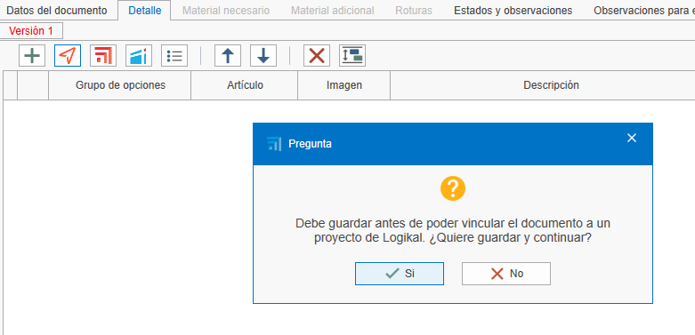

1. Relación entre fases en ENBLAU y Logikal
1. Introducción
Explicación de la relación entre las fases de un proyecto en ENBLAU y Logikal.
2. Fases - Ejemplos
Crear un presupuesto desde ENBLAU
-
Versión 1
- Al crear un presupuesto en ENBLAU, esta versión se reflejará en Logikal en "Posiciones sin Fase Asignada" dentro del mismo proyecto.

- Al crear un presupuesto en ENBLAU, esta versión se reflejará en Logikal en "Posiciones sin Fase Asignada" dentro del mismo proyecto.
-
Pedido
- Al confirmar el pedido en ENBLAU, se generará un pedido y luego una fase en Logikal denominada "Presupuesto aceptado".

- Al confirmar el pedido en ENBLAU, se generará un pedido y luego una fase en Logikal denominada "Presupuesto aceptado".
-
Producción 1
- Desde el pedido en ENBLAU, al crear una producción, se generará una nueva fase en Logikal llamada "nº presupuesto P1".

- Desde el pedido en ENBLAU, al crear una producción, se generará una nueva fase en Logikal llamada "nº presupuesto P1".
-
Medición 1
- Desde el pedido en ENBLAU, al crear una medición, se generará una nueva fase en Logikal denominada "nº presupuesto M1".

- Desde el pedido en ENBLAU, al crear una medición, se generará una nueva fase en Logikal denominada "nº presupuesto M1".
-
Producción 2
- Desde la medición en ENBLAU, al crear una producción (considerando los cambios en la medición), se generará una nueva fase en Logikal con el nombre "nº presupuesto P2".

- Desde la medición en ENBLAU, al crear una producción (considerando los cambios en la medición), se generará una nueva fase en Logikal con el nombre "nº presupuesto P2".
Nota:
Al crear un presupuesto en ENBLAU y luego añadir una posición de Logikal, esta se vinculará a un proyecto en Logikal o, en su defecto, se creará uno nuevo.


